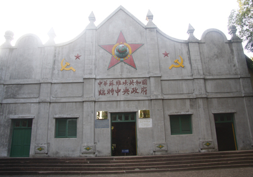
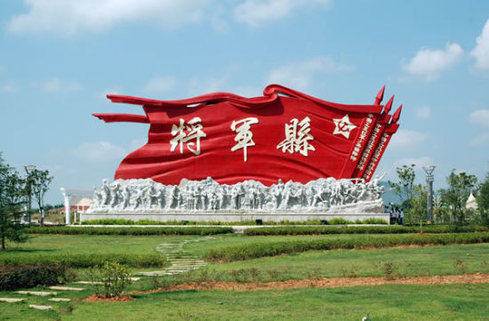

| 首页| 红色故都| 江南宋城| 生态明珠| 客家摇篮| 世界橙乡 |
赣州是全国著名的革命老区、共和国摇篮，是中华苏维埃共和国临时中央政府所在地，是中央红军气壮山河的两万五千里长征出发地，是南方红军三年游击战中心区域，是新四军创建地之一。毛泽东、朱德、周恩来、邓小平等老一辈无产阶级革命家在这里战斗、工作、生活过，共和国9位元帅、7位大将、37位上将从这里走出，给后人留下一批极其珍贵的精神财富。在这片红土地上，赣南人民为中国革命事业做出了巨大贡献，1955—1965年授衔的将军，赣南籍的有132名，其中兴国籍开国将军就有54名，被誉为全国著名的“将军县”，赣南为革命牺牲的有名有姓的烈士10.8万余人，占江西省烈士总数的43%，占全国烈士总数的7%。
瑞金是响誉中外的“红色故都”、共和国摇篮、中央红军长征出发地。瑞金在中国革命历史上曾经写下了光辉灿烂的一页，有着重要的历史地位。她是中国第一个红色政权——中华苏维埃共和国临时中央政府的诞生地，第二次国内革命战争时期中央革命根据地的中心，是驰名中外的红军二万五千里长征的出发地之一。“红都”这个光荣的称谓起源于上世纪三十年代初，毛泽东、朱德等老一辈无产阶级革命家在瑞金进行伟大革命实践和红色政权建设探索的光荣历史。1931年11月7日至20日，酝酿了近两年时间，并经过时任瑞金县委书记的邓小平同志精心筹备的第一次全国苏维埃代表大会，在瑞金的叶坪隆重召开，大会向世界庄严宣告中华苏维埃共和国临时中央政府正式成立，定都瑞金，毛泽东当选为临时中央政府主席，大会还通过了中华苏维埃共和国宪法大纲等决议案，自此，我们党领导的红色政权正式以国家形态出现。1934年1月，第二次全国苏维埃代表大会在瑞金沙洲坝召开，由于当时中共中央政治局已经从上海迁到了瑞金，因此，“二苏大会”后，中华苏维埃共和国临时中央政府的“临时”两个字就去掉了，正式成为中华苏维埃共和国中央政府，“二苏大会”还通过了修改后的宪法大纲等决议案和关于国旗、国徽、军旗以及关于确定8月1日为建军节等决定。因此，瑞金作为赤色首都，也是毛泽东思想的主要发源地和初步的形成地，是人民代表大会制度和“八一”建军节的诞生地。有关瑞金在中国革命中的历史地位，有一位专家作了很精辟的概括，这句话是：“封建专制，昏天黑地；上海建党，开天辟地；南昌建军，惊天动地；瑞金建政，翻天覆地；北京建都，改天换地；改革开放，欢天喜地。”
中国共产党早期的领导人和军事将领，大部分在这个时候得到了锤炼、成长，新中国的第一、二代领导人，共和国十位开国元帅中的九位，十位大将中的七位，以及1966年以前授衔的中国人民解放军将帅中的35位上将、114位中将和440位少将，当年都在瑞金战斗、工作、生活过。同时，在苏区人民以巨大的热情拥军支前、参加革命，为红军和苏维埃政权建设奉献了一切。以瑞金为例，当年仅24万人的瑞金，一共有11万人参军参战，5万多人为革命捐躯，其中1.08万人牺牲在红军长征途中，瑞金有名有姓的烈士有17166名。为支持苏区建设和支援红军北上抗日战略转移，从1932年至1934年，瑞金人民认购了68万元的公债，借出25万担谷子，其中41.5万元公债和捐集的所有粮食无私奉献给了苏维埃政府，长征时存在苏维埃国家银行2600万银元的存款一并用于支持革命。光荣的苏区历史为瑞金留下了众多独特的革命旧居旧址和精神遗产。瑞金境内共和革命旧居旧址180多处，拥有红军广场、“一苏大”会址、中华苏维埃临时中央政府大礼堂、红井等国家级重点文物保护单位33处，这些都是发展红色旅游的宝贵资源；同时，自1995年新华社在瑞金修建革命旧址、续写“红色家谱”以来，至今已有40多个部委来瑞金寻根问祖，按照修旧如旧、修旧复旧的原则，修建革命旧址，在叶坪、沙洲坝已经成规模较大的国家部委旧群，成为瑞金红色旅游的一大景观。顶部 首页